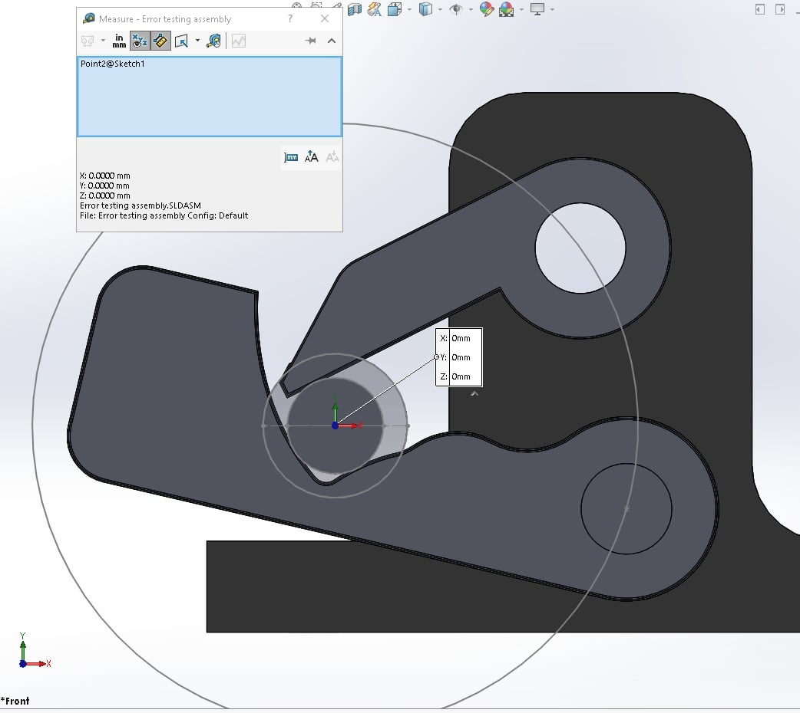
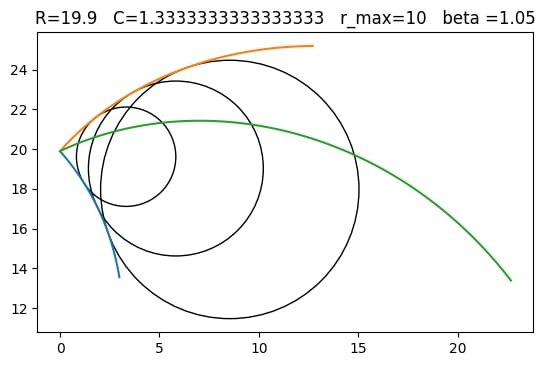
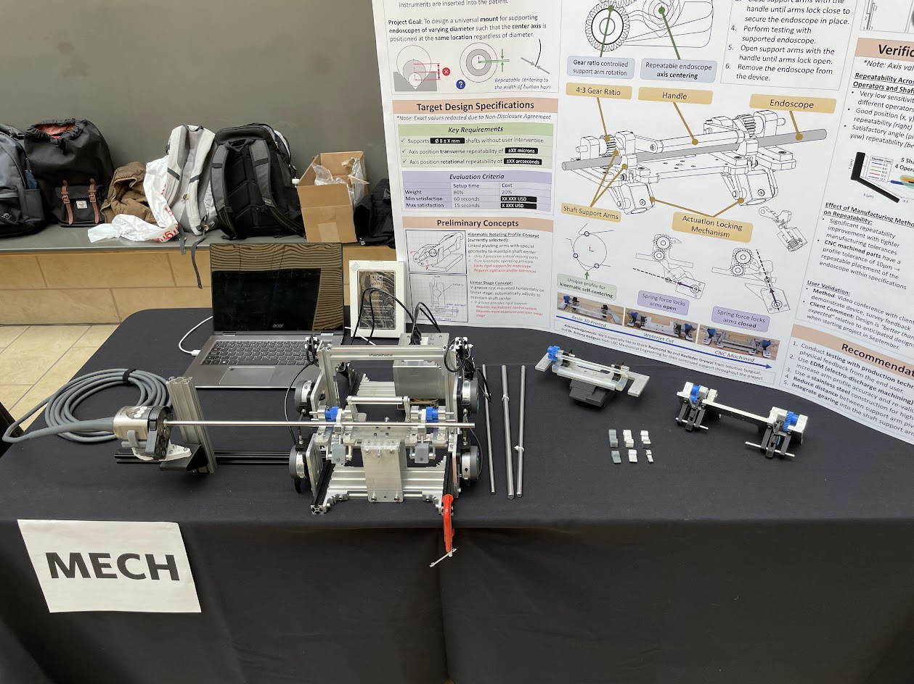
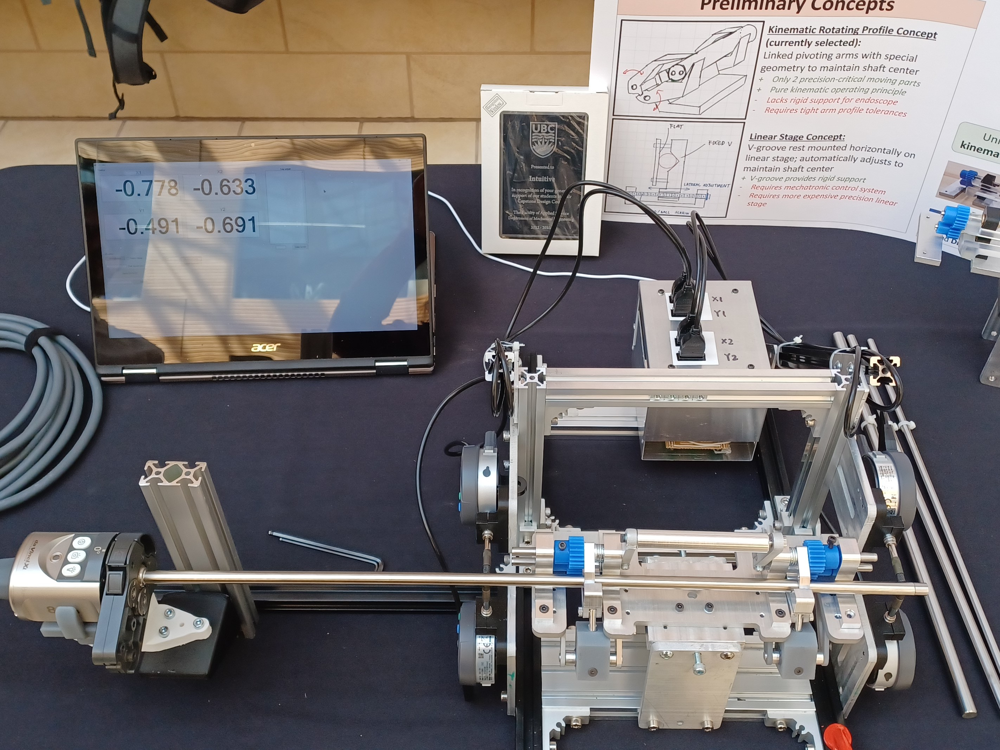

OCM (Opticlaw Mod)

A variable-diameter endoscope test fixture mount for Intuitive Surgical.
With Capstone team: Phoebe Cheung, Cameron Lee-Ming, and Adam Metwally.
In this project, our team created a specialized test fixture mount which holds endoscopes for testing and validation. The key feature of the mount is that endoscopes of varying diameter can be held repeatably in the same position. The target repeatability was within the 100 micron and 100 arcsecond range. I was primarily responsible for the creation of the fundamental arm geometry and the design of a spring-detented locking mechanism in Solidworks.

The endoscope is held between two arms, top and bottom. The top and bottom arms are coupled using a gear mechanism, and the combination of the arm geometry and the gear ratio ensures that any circle within a range of diameters will be held at the same center.
This core idea is not a new one, as it was first documented in a 1992 Newport patent. For our implementation, I rederived the governing geometrical relationships to be able to use a straight top arm. This was done in order to reduce the complexity of the machining process and in theory, improve the profile tolerance on the top arm.

The intrinsic function of the mount is based on the specific geometry of the bottom arm in the clamp, which contains two numerically defined curves. In the figure above, the blue and orange curves trace the profile of the bottom arm as it touches off on a range of radii from 0 to r_max=10mm.
The green curve shows the contact point of the top arm. The gear ratio is given by C=4/3, and the distance between the arm pivots and the virtual center point is R=19.9mm. The curves were generated using a python script.

Final project showcase, with dummy endoscope installed in testing apparatus (left) and older prototypes (right).

Close up of testing apparatus and GUI. The testing apparatus used four dial indicators, whose serial outputs were polled by a microcontroller and transmitted to a PC over a USB connection.
At each end, a pair of dial indicators measures the center position of a test cylinder (relative to a chosen reference cylinder's center position). From the pair of center positions, the relative pitch and yaw of the shaft could also be measured.
The repeatability of the mount was tested by installing and uninstalling steel driveshafts of different diameters and measuring the variance in the center position.